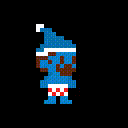

Personagens
-
Personagem Principal (ainda definindo o nome)
O personagem principal é um jovem adulto de quase 30 anos, é bem mulherengo, grosso, mal-educado, gosta bastante de dinheiro, de comer o tempo todo, fala com um sotaque bem característico da região do nordeste do Brasil e essas características serão demonstradas claramente ao longo do jogo.
-
O vilão
O vilão é um conhecido de infância do personagem, que se sentiu muito ofendido por este seu jeito (ainda que inconscientemente). Devido à esta mágoa por ter sido maltratado quando criança, vilão faz de tudo para atrapalhar a vida do personagem principal, até mesmo esta parte extrema de sequestrar seus amigos mais próximos.
-
Inimigos
Além do vilão principal da história, haverão diversos outros NPCs inimigos que aparecerão aos montes pelo mapa, a fim de por um fim na aventura do nosso personagem. Eles serão desde bandidos comuns, sem muita habilidade, até robôs construídos com a mais alta tecnologia desenvolvida pelo vilão principal